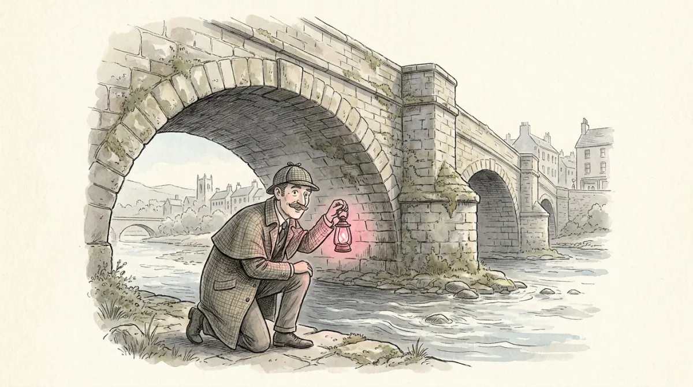

Every morning you drive over a bridge you did not build, could not inspect, and cannot see under. Crossing anyway is trust. The course's definition: political trust is citizens' support for political institutions (government, parliament) in the face of uncertainty about, or vulnerability to, their actions. It is relational: A trusts B to do X: a citizen trusts an institution with something, it links "citizens" to "institutions", and it can be decomposed into four checks, the inspector's list:
Here is the look-alike pair Poli-00 promised, and it decides real exam points. The absence of trust is not distrust:
The course's line to keep: democracy does not require blind trust; it requires an active, vigilant citizenry with a healthy skepticism of government. Almond and Verba's civic culture said the same with different words: engaged AND willing to delegate. The enemy is not doubt; it is the certainty that doubt is pointless.
Political support is not one feeling but a tower, from diffuse to specific, and knowing the floors tells you which cracks matter:
| 1. Political community | National identity: belonging to the "we" at all. Most diffuse. |
|---|---|
| 2. Regime principles | Support for democracy as a value. |
| 3. Regime performance | Satisfaction with how democracy is working here, now. |
| 4. Regime institutions | POLITICAL TRUST lives here: parliament, government, parties, courts. |
| 5. Officeholders | The current incumbents. Most specific, most volatile. |
Two consequences the exam likes. First, floors move independently: high support for democratic principles can coexist with low trust in institutions, producing the "critical citizen" (Inglehart, Norris): pro-democracy, anti-how-it-is-run. Second, not all declines are equally dangerous: losing faith in incumbents is Tuesday; losing satisfaction with performance is a warning; losing support for democratic principles is the fire alarm.
The lecture's key modern finding splits floor 4 in two:
Scholars split into two camps, names attached. The decline camp: Dalton (declining trust has spread across almost all advanced industrial democracies since the 1960s-70s), Citrin and Stoker (most countries show lost confidence in legislatures). The trendless-fluctuations camp: Norris (the "crisis myth" exaggerates disaffection; trust waxes and wanes), van der Meer ("the last few decades are characterized by trendless fluctuations in most countries").
The regional tour, MCQ fuel throughout: the US fell off a cliff 1958-1980 (over 70% to under 30%), wild swings since, historic lows after 2016. The Nordics stay highest among established democracies (long democratic tradition, low corruption). Southern Europe lost over 25 points after the 2007 recession (Greece, Spain), on top of authoritarian and clientelist legacies: Italy's trust collapsed in the 1990s with Tangentopoli and the party system's implosion, fertile ground for populism since. Central and Eastern Europe had a post-1989 honeymoon, then decline to the EU's lowest levels. Latin America trended up 1995-2011. And the puzzle the course flags with a raised eyebrow: illiberal regimes report the highest trust on earth (China, Singapore, Qatar), where reported trust, performance legitimacy, and the safety of answering surveys all tangle together.
Three versions of the crisis narrative, in descending drama: regime survival ("a democratic system cannot survive without the support of a majority", Miller: the most extreme claim), systemic change (low trust forces far-reaching change within representative democracy: Italy's 1990s party-system implosion, France's move to the Fifth Republic, New Zealand switching from majoritarian to PR), and the canary in the coal mine (Norris: low trust is a warning light of democratic malaise, not itself the engine of collapse). What the data does establish: declining trust shifts preferences: citizens who trust less want smaller government and support less redistribution and fewer policies benefiting minorities. Low trust also travels with populist surges (Trump, Milei, Bukele, M5S, Podemos all campaigned on distrust), calls for direct democracy and "strong leaders", and falling turnout; in Hungary and Poland it opened doors to illiberal "strong governance". High trust, in the Nordics, traveled with COVID compliance and effective government.
Then the resolution the course ends on: Valgarðsson et al. 2025, the largest study ever run: 3,377 surveys, 143 countries, 1958-2019. The answer depends on three words:
Conclusion, quotable whole: the decline in trust in representative institutions is real, even if not uniform. The crisis is neither myth nor apocalypse; it is specific, and now you can say exactly where it lives. And the course's final question, a fitting last line for the whole semester: can institutions reform fast enough to keep their legitimacy?
| Political trust | citizens' support for political institutions under uncertainty/vulnerability; relational (A trusts B to do X) |
| Four checks | competence · care · accountability · reliability |
| Skeptic vs cynic | suspend judgment (healthy) vs assume the worst and disengage (the danger); democracy needs vigilant skeptics |
| Five floors | community → principles → performance → institutions (= trust) → officeholders; principles-decline is the alarm |
| Critical citizen | high support for democratic principles + low institutional trust (Inglehart, Norris) |
| Key finding | representative institutions declining · implementing institutions stable/rising |
| The debate | decline camp (Dalton; Citrin & Stoker) vs trendless fluctuations (Norris; van der Meer) |
| Causes | corruption (strongest, universal) · procedural fairness (transparency cuts both ways) · economy (subjective; explains fluctuations) · winner-loser gap (wider in majoritarian) · socialization (education×corruption, migrants, postmaterialism) |
| Consequences | smaller-government preferences, less redistribution; populism, direct-democracy calls, lower turnout; three narratives (survival / systemic change / canary) |
| Valgarðsson 2025 | 3,377 surveys, 143 countries: decline is real but depends on WHAT (representative), WHERE, WHEN |
Inspect the bridge, keep crossing, and worry precisely: about the politicians' arch, not the engineers'.
Six questions in the written test's style.